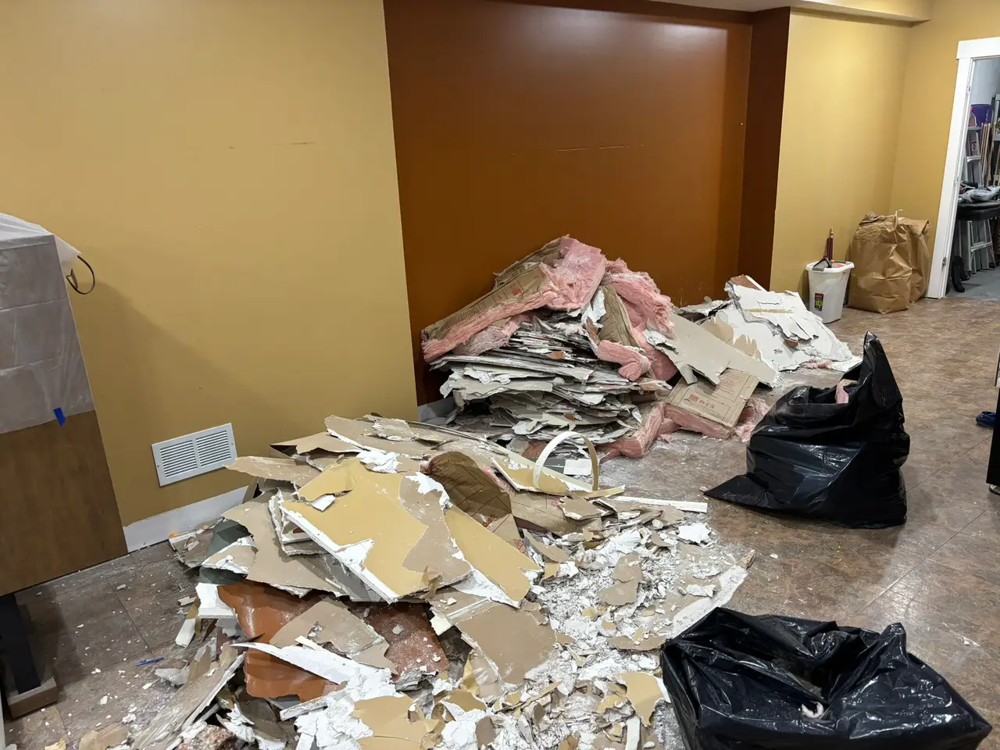
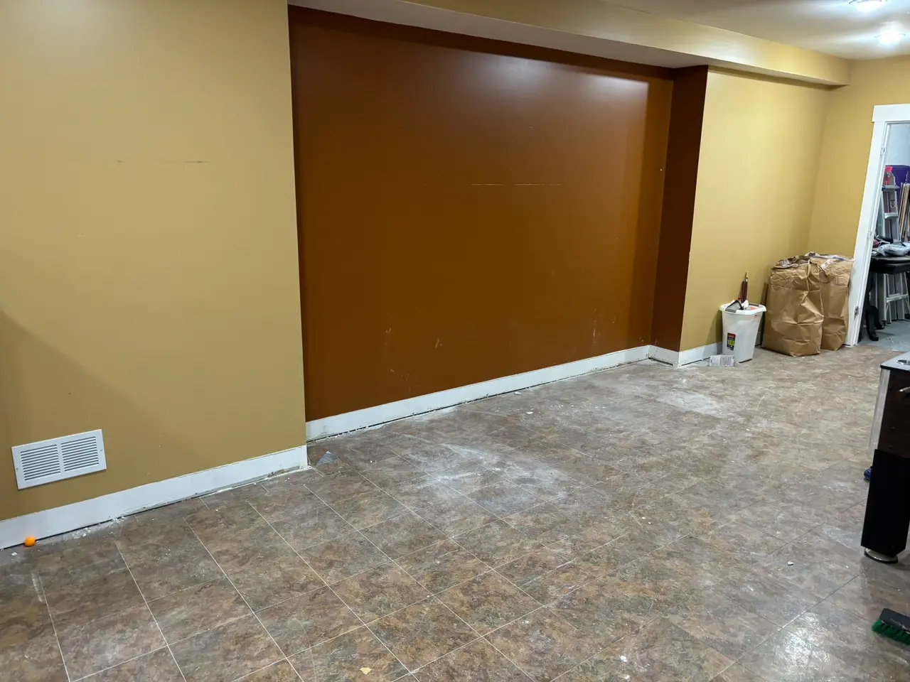

Before: basement debris ready to be hauled away.
Basement Cleanouts is easier with Junkernauts Junk Removal. Call or text 734-480-8190 or request a fast photo estimate online. We handle loading, hauling, and responsible disposal.

Before: basement debris ready to be hauled away.

After: usable basement space opened back up.
Junkernauts Junk Removal clears basement furniture, old appliances, boxes, shelving, and unwanted stored items across Southeast Michigan. We can remove a few heavy pieces or clear the requested contents of a basement before a move, remodel, or property sale. You identify what stays and what goes; our crew handles carrying the approved items out and loading the truck.
You do not need to carry everything upstairs before we arrive. Send photos of the items and tell us about the route out: interior stairs, a walkout door, narrow turns, low ceilings, or a long walk to the truck. Include any especially heavy items in your basement cleanout estimate request so we can plan the work and quote it accurately.
Set aside or clearly identify belongings you want to keep before removal starts. If the project includes several rooms, tell us which areas are part of the cleanout. For a whole home, our estate and property cleanout service covers a broader scope.
The quote depends on truck space, material type, and the access and labor needed. Photos help us estimate a range, and we confirm the exact price onsite before loading begins. See our minimum pickup and load-size guide or book a free onsite quote for a larger project.
Drywall, insulation, flooring, and lumber left after a basement renovation need a different hauling plan from boxes and furniture. Include those materials in your request and visit construction debris removal for more details. The Ann Arbor project shown here is an example of this kind of basement debris cleanout.
We separate reusable items and recyclable material when practical, then haul the remaining load for responsible disposal. Call or text 734-480-8190 with your item list and access details to plan the next step.
A recent Ann Arbor basement cleanout went from a room full of drywall, insulation, flooring, and other debris to clear, usable floor space. We handled the lifting, sorting, loading, and hauling so the customer could reclaim the room.